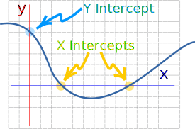
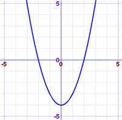
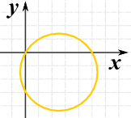

Finding Intercepts From an Equation
X Intercept: where the graph of an equation crosses the x-axis
Y Intercept: where the graph of an equation crosses the y-axis

To find the intercepts:
When you want the x intercepts (x,0):
Set y=0 then solve for x
When you want the y intercepts (0,y):
Set x=0 then solve for y
Example: Find the intercepts of y = x2 − 4
x intercept: set y=0
0 = x2 − 4
x2 = 4
x = 2 or −2
The points are (2,0) and (−2,0)
y intercept: set x=0
y = 02 − 4
y = −4
The point is (0,-4)
And here is the graph of x2 - 4 to confirm what we found:

Example: Find the intercepts of x2 − 5x + y2 + 3y = 0
x intercept: set y=0
x2 − 5x + 0 + 0 = 0
x(x−5) = 0
x = 0 and 5
The points are (0,0) and (5,0)
y intercept: set x=0
0 − 0 + y2 + 3y = 0
y(y+3) = 0
y = 0 or −3
The points are (0,0) and (0,−3)
So there are a total of 3 points:
(0,0), (5,0) and (0, −3)
And here is the graph ... it's a circle!
